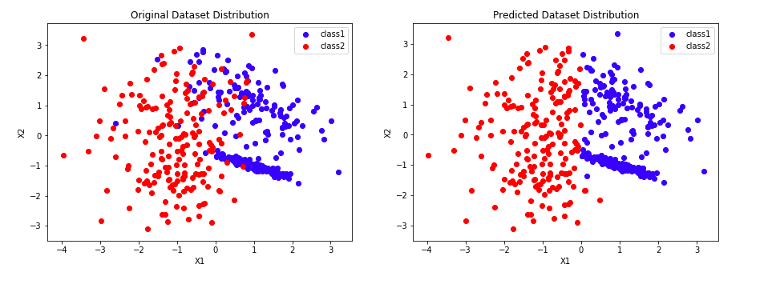

(The Chinese New Year is getting close, so I choose a background image with festival atmosphere :D)
Today I want to talk about another ensemble method - AdaBoost.
AdaBoost is the most fundamental and also the first boosting algorithm. Basically, it tries to add weak leaners (classifier that is slightly better than random guessing) one at a time; and each weak learner tries to get those points which are currently not classified correctly right.
At first glance, Adaboost looks very intuitive. The differences between bagging and AdaBoost is that we use different techniques to create our new sample data. For bagging, we use bootstrap; whereas for AdaBoost, we use weights to resample data. Let us then see some detailed information about how AdaBoost works.
1. Model Structure
1.1 Overview
Let us start from seeing the output classifier of Adaboost: $$G(x) = sign[\sum_{m=1}^M\alpha_mG_m(x)]$$
By looking at this formula, we could say that $G(x)$ is actually a weighted majority vote of each weak leaner $G_m(x)$ where each is assigned weight $\alpha _m$.
Basically, here is what AdaBoost does:
- It helps us choose the training set for each weak learner based on the results of the previous classifier
- It determines how much weight should be given to each classifier
1.2 AdaBoost Model
I would like to divide the Adaboost model into five steps:
Step 0: Generate Training Data
We have already learned Random Forest and we know that the way it deals with generating more training data is to use bootstrap with selected features. For Adaboost, each data point will have a weight (we can then deem the data set as a distribution). And we will base on that weight to sample data.
At the begining, we set $\omega_i=\frac{1}{n}$
Step 1: Fit a weak learner classifier $G_m(x)$
Since we only need a weak learner, the normal choice is to use Decision Stump. Decision stump is a simple tree classifier with only one splitting: $$G_m(x|j,t) = \begin{cases} + 1\ x^{j}>t \\ -1 \ otherwise\ \end{cases}$$ where $j \in {1,...,d}$ indexes an axis in $R^d$.
Step 2: Compute the Model Weight
For each of the weak learner, we will calculate the weighted classification error: $$err_m = \frac{\sum_{i=1}^{n}\omega_i I\{y_i \neq G_m(x_i)\} }{\sum_{i=1}^{n}\omega_i}$$ Where $\omega_i$ is the weight for the $i_{th}$ data point
This error measures the goodness of the weak learner, the smaller the better. But we want to create a value that is in direct proportion to the goodness of the classifier, here comes the model weight $\alpha_m$: $$\alpha_m= log(\frac{1-err_m}{err_m})$$ It looks like this:
Step 3: Update the Data Point Weight
After getting the goodness of one weak learner, we then update the training data weights by using this formula:
$$\omega_{i+1} = \frac{\omega_i \cdot exp(-\alpha_m\cdot y_i G_m(x_i))}{\sum_{i=1}^n \omega_i \cdot exp(-\alpha_m\cdot y_i G_m(x_i))}$$
The intuition here is that:
if we incorrectly classify the $i^{th}$ data point, the weight will change depending on the goodness of this classifier:
- If this classifier is good (accuracy > 50%), we will get a high positive $\alpha$ value, so this data point will have larger weights, which means it will be included with a higher probability in the next training dataset
- If this classifier is bad (accuracy < 50%), we will get high negative $\alpha$ value, so this data point will have lower weights, which means it will be included with a lower probability in the next training dataset. The reason is that this classifier is bad, the opposite is right. So we think the data that it classified incorrectly is actually correct.
And the same reasoning when we correctly classify it. The key idea is: We will give large weight to the data point that we think we classify it incorrectly and give smaller weight to the right one.
Step 4: Majority Vote:
We will then loop through all the steps above to generate $M$ weak learner. Fianlly we will get the output based on weighted majority vote: $$G(x_i) = sign[\sum_{m=1}^M\alpha_mG_m(x_i)]$$
Notice that boosting can overfit with the number of weak learners, although this overfitting tends to occur slowly if at all. We use cross-validation to select $M$.
2. Additive Model and Exponential Loss
When first knew that Adaboost actually minimizes exponential loss, I felt pretty surprised. Since the procedure in Adaboost is a little bit different with other ML algorithms which usually apparently minimize some loss function to get the optimal results. So in this post, I think it is very necessary to talk about why Adaboost minimizes exponential loss.
(By the way, Robert E. Schapire who create Adaboost, admitted that Adaboost not originally designed for minimizing some loss, but later found out to minimize exponential loss)
2.1 Forward Stagewise Additive Modeling
Boosting is a way of fitting an additive expansion in a set of "basis" functions. It takes the form: $$f(x) = \sum_{m=1}^{M}\beta_m b (x;\gamma_m)$$ where $\beta_m$ is the expansion coefficients, and $b (x;\gamma_m)$ is usually simple function of $x$, characterized by a set of parameters $\gamma$.
Typically these models are fit by minimizing a loss:
$$(\beta_m,\gamma_m)=\arg\min\sum_{i=1}^{N}L(y_i,\beta_mb_m(x;\gamma_m))$$
And forward stagewise modeling approximated the solution by sequentially adding new basis functions to the expansion without adjusting the parameters that have already been added. (Apparently a greedy method. I find that for some hard optimization problems, people always simplified it by finding local optimal instead)
Take squared-error loss for example, $$L(y,f(x))=(y-f(x))^2 \\ L(y_i,f_{m-1}(x_i)+\beta b(x_i;\gamma))=(y_i-f_{m-1}(x_i)-\beta b(x_i;\gamma))^2 \\ = (r_{im}-\beta b(x_i;\gamma))^2$$ Which equals to fitting a best model to current residuals. Think about how Adaboost works, I find that we also fit a best model for the data points that are not classified right (similar to residual).
2.2 Exponential Loss
Now let us see how Adaboost is equivalent to forward stagewise additive modeling using the loss function:
$$L(y,f(x))=exp(-y(f(x)))$$
There is a very good proof and explanation here:
Proof For Why Adaboost Minimize Exponential Loss
Basically it solves two problem
The rationality of exponential loss: we find that our optimal solution is almost identical to the logit and we use $F(x)$ to model the posterior probability: $$P(y=1|x) = \frac{e^{2F(x)}}{1+e^{2F(x)}}$$ If $sign(F(x))>0$, then $P(y=1|x)>\frac{1}{2}$. So we could see that by using exponential loss, we actually tries to find a function to model the posterior probability, which is rational in Bayesian perspective. And also, it is natural that AdaBoost is a discriminant classification method.
How to derive the algorithm based on minimizing exponential loss: All other mathematical proof in above link: one thing need to be noticed is that when we want to optimize two parameters, we always fix one of them, find the optimal; and based on that value to find another parameter’s optimal value.
3. Model Implementation
Then let me construct Adaboost model from scratch. As normal, I will compare my result with sklearn.ensemble.AdaBoostClassifier in the end. Here is the plot of my model:

And here is the link of Jupyter Notebook For AdaBoost
This time I did spend some time to see more detailed information about boosting and Adaboost; In the end, I want to thank for Zehao, who gave me lots of good intuition. I will get back to more boosting methods next time!
Reference:
Book: The Elements of Statistical Learning
https://towardsdatascience.com/boosting-algorithm-adaboost-b6737a9ee60c
http://mccormickml.com/2013/12/13/adaboost-tutorial/